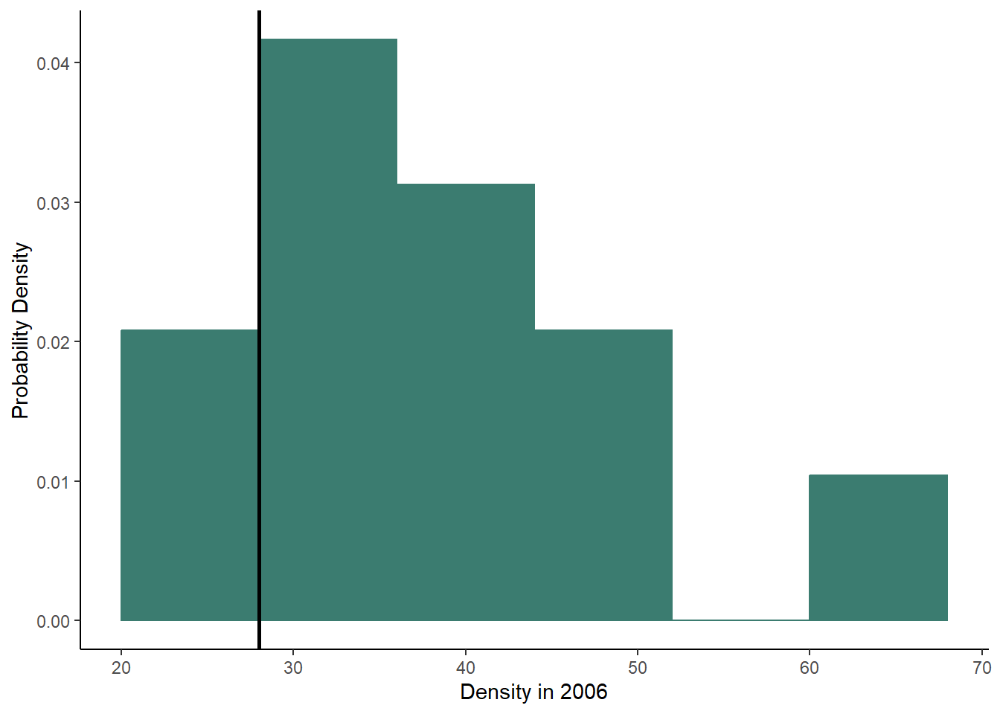
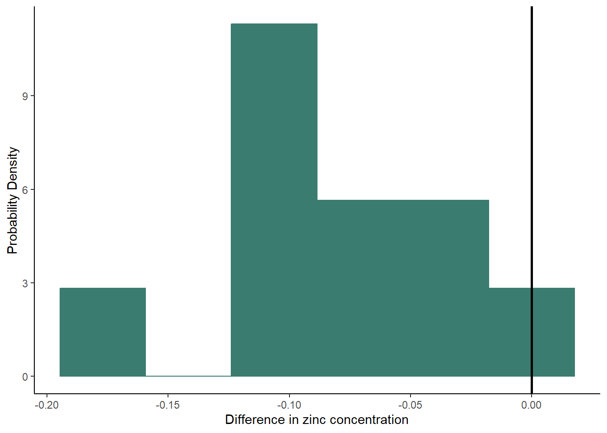

In this lesson, you will practice running your first formal statistical test, a t-test! You will use both a classical frequentist and a likelihood-based approach to run the test.
We will start by analyzing the civu thistle data using the classical frequentist approach. We will continue work with the same question you tackled in your previous lessons: does insect herbivory affect the density of thistle plants?
You can start by re-running your code from the Model Building lesson, or you can just run the commands in this lesson to set up your data and build your models. Don’t forget to set your working directory first!
civu <- read.csv("civu.csv")
civu$herbivory <- as.factor(civu$herbivory)Now that we have the data set up, let’s run the t-test itself. The
syntax is similar to what we used to set up our alternative model in the
lm function, but this time we will use a new function:
t.test. The first argument for this function is the formula
for our alternative model, with the dependent variable on the left and
the independent variable on the right. The second argument is the data
set. Then then final argument “var.equal = TRUE” tells R that we are
assuming our two treatments have equal variance.
civu_ttest <- t.test(density_2006 ~ herbivory, data = civu, var.equal = TRUE)To view the output, just type:
civu_ttest##
## Two Sample t-test
##
## data: density_2006 by herbivory
## t = -8.2506, df = 148, p-value = 7.941e-14
## alternative hypothesis: true difference in means between group 0 and group 1 is not equal to 0
## 95 percent confidence interval:
## -21.07172 -12.92828
## sample estimates:
## mean in group 0 mean in group 1
## 21 38You should see the following pieces in your output:
Based on this output, would you reject the null hypothesis and tentatively accept the alternative hypothesis?
Next we will use a likelihood-based approach to test the same question. For this, we will start by building our two linear models, just as we did in the Model Building lesson:
civu_null <- lm(density_2006 ~ 1, civu)
civu_alt <- lm(density_2006 ~ herbivory, civu)Now, we just need to calculate the Akaike’s Information Criterion
(AIC) values for the two models. We can do this using the
AIC function. As the arguments, we just need to list the
models we want to compare. We can compare more than two models at once,
but for this question, we just have our null model and one alternative
model.
AIC(civu_null, civu_alt)## df AIC
## civu_null 2 1178.015
## civu_alt 3 1123.255You should see the output automatically appear in a table. The first column lists the model. The second column (df) lists the number of parameters in each model (remember, AIC penalizes for adding parameters). The final column lists the AIC values for each model. The lower the AIC value, the better the model. A difference of 2 or more between the AIC values indicates that one model is significantly better than the other.
Based on this output, which is the better model? Is it significantly better?
Does your conclusion from this approach match your conclusion from the classical frequentist approach?
We use a one-sample t-test in place of a two-sample t-test when we have a good estimate of the true mean for a variable in our underlying population. This true mean can effectively be used in place of a control group. Rather than having to estimate the true mean from the control group, we already have a value for the true mean that we can then compare to our sample group. For this test, we will only look at the classical frequentist approach.
For simplicity, let’s keep working with the civu thistle data set. This time, let’s imagine we had good data from a long-term study on the density of thistles in the presence of herbivores. These data provide a good estimate of the true mean thistle density. This true mean density is 28 thistle plants.
For this, we will want to use a data set that only includes observations in the absence of herbivores because that is what we want to compare to the true mean in the presence of herbivores. We’ll start by creating that data set:
civu_noherb <- filter(civu,herbivory == "1")Remember to use the double equals signs to tell R that you are looking for observations that match that criterion.
Now, let’s run the t-test using the classical frequentist approach.
We will still use the t.test function, but this time,
because we are just comparing one sample to a true mean, we will not
have a predictor variable. Instead of using a formula as the argument,
we will provide two arguments: a vector with our data (the density
values in the absence of herbivores) and the estimate for the true mean
(28).
t.test(x = civu_noherb$density_2006, mu = 28)##
## One Sample t-test
##
## data: civu_noherb$density_2006
## t = 9.8695, df = 119, p-value < 2.2e-16
## alternative hypothesis: true mean is not equal to 28
## 95 percent confidence interval:
## 35.99373 40.00627
## sample estimates:
## mean of x
## 38The output includes the same components as the output from the two-sample t-test, but not the difference in the alternative hypothesis. This time, the alternative hypothesis compares the sample mean to the true mean, instead of comparing two sample means.
Based on this output, would you reject or accept the null hypothesis? What does that say about the effect herbivory on thistle density?
We’ll wrap up this section by taking a look at one example of how you
can visualize the data for a one sample t-test. This graph will be
similar to some graphs you have made before; it will by a histogram of
your data. However, in this case, instead of having two samples, we have
one sample and a value for the true mean in the presence of herbivores.
Therefore, we will create a histogram of our sample data with a vertical
line (using the geom_vline function) showing the true mean.
We set the value of the true mean for the vertical line using the “x
intercept” argument of the geom_vline function.
ggplot(data = civu_noherb, aes(x = density_2006))+
geom_histogram(aes(y=after_stat(density)),fill = "#3b7c70", colour = "#3b7c70" , bins = 6) +
geom_vline(xintercept = 28, linewidth = 1) +
labs(x = "Density in 2006", y = "Probability Density") +
theme_classic()
Paired sampling designs can be powerful designs for reducing the effects of variation between our samples, allowing us to better detect the effects of our predictor variable. In a paired design, our observations are paired, or matched, in some way. For example, each individual might be subjected to both treatments or we might compare two treatments applied to the same plot. Paired t-tests are a test we can use for paired sampling designs to make comparisons between the two treatments for each individual/sample. The mechanics of this test are actually similar to that of a one-sample t-test! We are comparing the difference in values of our paired samples with a “true” mean of zero.
For this example, we will use a new data set with zinc concentrations at the surface and bottom of a lake. The samples were taken at 10 different locations within the lake. At each site, one sample was taken at the surface and one sample was taken at the bottom. Therefore, we can use a paired t-test to compare between the surface and bottom samples at each location.
Start by loading your data. Be sure your new zinc data set is in your working directory.
zinc <- read.csv("zinc.csv")Now go ahead and view the entire data set, either using the
View function or typing the data frame name into your
console. One thing I want you to notice about the data set is that if
you look at the sample number column, the samples are in the same order,
from 1 to 10, for both the bottom and surface samples. When you use the
t.test function for a paired t-test, it is important for
your samples to be in the same order for both of your treatments.
Otherwise R will not pair up the values correctly. For the likelihood
approach, the order does not matter, as long a you have a column for the
sample number.
Next we will run the t-test. The syntax is the same as what you used for a two sample t-test. You will include the formula with your dependent and independent variables as the first argument and the data frame as the second argument. Then we will add one additional argument (“paired = TRUE”), which will tell R to run a paired t-test instead of a normal two-sample t-test.
paired <- t.test(conc ~ type, data = zinc, paired = TRUE)Again, the output should be similar to what you have seen before. Should you reject the null hypothesis that there is no difference in zinc concentration between the surface and bottom of the lake?
We will now run the same test using the likelihood approach. To do
this, we will be using a function similar to the lm
function, but which will allow us to account for the paired design. The
new function, lmer, can be found in the
lme4 package. If you haven’t already done so, install
the packages using install.packages("lmer").
Then load the package for this session:
library(lme4)## Loading required package: Matrix##
## Attaching package: 'Matrix'## The following objects are masked from 'package:tidyr':
##
## expand, pack, unpackWe are now ready to run the test. As I said, we will use the
lmer function, which is very similar to the lm
function. We will include the same arguments as usual: the formula for
our model and the data. The only change we need to make is adding an
additional piece to our formula. The syntax for the additional piece is
(1|sampnum). This additional piece of the formula will tell
R to compare the zinc concentrations at the surface and bottom within
each sampling location. We will build both a null an alternative model
to compare.
zinc_null <- lmer(conc ~ 1 + (1|sampnum), data = zinc)
zinc_alt <- lmer(conc ~ type + (1|sampnum), data = zinc)Next, we will use our AIC function to compare our null
and alternative models to each other:
AIC(zinc_null, zinc_alt)## df AIC
## zinc_null 3 -20.78169
## zinc_alt 4 -25.24908The output should have the same structure that it had when we used AIC to compare models for the one sample t-test. Based on this output, which is the better model? (Notice that the AIC values are negative this time, so the better model will be more negative.) What does that tell you about whether zinc concentrations vary between the surface and bottom of the lake?
There are many ways we could visualize paired t-test data, including a simple boxplot, as we would for a regular two-sample t-test. However, using a boxplot like that would show the full variation in each sample, without accounting for the paired design. A way around that is to instead make a histogram of the difference between our paired samples. As we did with the one sample t-test, we will again add a vertical line, this time at 0, to represent the difference we would expect to see under our null hypothesis.
First we need to make a data frame with the difference in zinc
concentrations between the surface and the bottom of the lake at each
location. We will do this using the group-by and
summarise functions to summarise the difference in
concentration for each sample number.
group <- group_by(zinc,sampnum)
zinc_diff <- summarise(group, diff = diff(conc))Now we can make our histogram using the new zinc_diff
data frame:
ggplot(data = zinc_diff, aes(x = diff))+
geom_histogram(aes(y=after_stat(density)),fill = "#3b7c70", colour = "#3b7c70" , bins = 6) +
geom_vline(xintercept = 0, linewidth = 1) +
labs(x = "Difference in zinc concentration", y = "Probability Density") +
theme_classic()